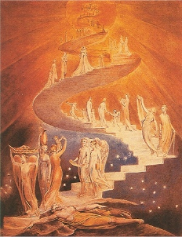

Sacred Texts Esoteric
Buy this Book at Amazon.com
|

William Blake, Jacob's Ladder, (ca. 1800) [Public Domain Image] |
The Goal of Lifeby Hiram Butler[1908] |
Hiram Butler, a 19th Century American occultist best known (if at all) for the book Solar Biology, started the Esoteric Society in Boston in the late 1880s. He fled Boston in 1891 after a murky dispute with the better-known Theosophical Society. He ended up in Applegate, California, a small town on the outskirts of Auburn in the Sierra foothills. The Esoteric Society was set up on land purchased from Leland Stanford in 1892, and Butler and a handful of disciples lived there. Later the Society had to change names to the Esoteric Fraternity for legal reasons.
This book is Butler's description of the entire spiritual evolution of humanity. Based on a mystical vision of Christianity, Butler thought that an invisible 'Order of Melchisedek,' 288,000 strong (144,000 male-female couples) would eventually be able to transcend the limitations of physical reality and become as 'Elohim,' the plural components of God. He also brings into the mix other parts of his world-view, including his simplified version of Astrology, and many ideas similar to those promoted by New Thought.
Butler is practically unknown today but he had a huge influence on vernacular occult writing in America, particularly the popular Yogi Publication Society (YPS) books authored by William Atkinson, who was known to quote Butler on occasion.--J.B. Hare, May 30th, 2008.